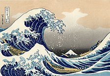

Japanese culture has evolved greatly from its origins. Contemporary culture combines influences from Asia, Europe and North America.[335] Traditional Japanese arts include crafts such as ceramics, textiles, lacquerware, swords and dolls; performances of bunraku, kabuki, noh, dance, and rakugo; and other practices, the tea ceremony, ikebana, martial arts, calligraphy, origami, onsen, Geisha and games. Japan has a developed system for the protection and promotion of both tangible and intangible Cultural Properties and National Treasures.[336] Twenty-two sites have been inscribed on the UNESCO World Heritage List, eighteen of which are of cultural significance.

Honne and tatemae (本音と建前) contrasts a person's true feelings and desires and the behavior and opinions one displays in public.[337] Yamato-damashii (大和魂) refers to the cultural values and characteristics of the Japanese people. It originates from the Heian period and describes the indigenous Japanese 'spirit' or cultural values as opposed to cultural values of foreign nations. Wa (和) is a Japanese cultural concept that implies a peaceful unity and conformity within a social group, in which members prefer the continuation of a harmonious community over their personal interests.[338][339] Miai (見合い) is a Japanese traditional custom in which a woman and a man are introduced to each other to consider the possibility of marriage. It is a meeting opportunity with more serious considerations for the future as a process of courtship.[340] Ishin-denshin (以心伝心) is a Japanese idiom which denotes a form of interpersonal communication through unspoken mutual understanding.[341] Isagiyosa (潔さ) is a virtue of the capability of accepting death with composure and equanimity. Cherry blossoms are a symbol of isagiyosa in the sense of embracing the transience of the world.[342] Hansei (反省) is a central idea in Japanese culture, meaning to acknowledge one's own mistake and to pledge improvement. Kotodama (言霊) refers to the Japanese belief that mystical powers dwell in words and names.
Japanese architecture is a combination between local and other influences. It has traditionally been typified by wooden structures, elevated slightly off the ground, with tiled or thatched roofs. Sliding doors (fusuma) were used in place of walls, allowing the internal configuration of a space to be customized for different occasions. People usually sat on cushions or otherwise on the floor, traditionally; chairs and high tables were not widely used until the 20th century. Since the 19th century, however, Japan has incorporated much of Western, modern, and post-modern architecture into construction and design, and is today a leader in cutting-edge architectural design and technology.
The Shrines of Ise have been celebrated as the prototype of Japanese architecture.[350] Largely of wood, traditional housing and many temple buildings see the use of tatami mats and sliding doors that break down the distinction between rooms and indoor and outdoor space.[351] Japanese sculpture, largely of wood, and Japanese painting are among the oldest of the Japanese arts, with early figurative paintings dating back to at least 300 BC. The history of Japanese painting exhibits synthesis and competition between native Japanese aesthetics and adaptation of imported ideas
The interaction between Japanese and European art has been significant: for example ukiyo-e prints, which began to be exported in the 19th century in the movement known as Japonism, had a significant influence on the development of modern art in the West, most notably on post-Impressionism.[352] Famous ukiyo-e artists include Hokusai and Hiroshige.
Japanese manga developed in the 20th century and have become popular worldwide.[353] Rakuten Kitazawa was first to use the word "manga" in the modern sense.
Honne and tatemae (本音と建前) contrasts a person's true feelings and desires and the behavior and opinions one displays in public.[337] Yamato-damashii (大和魂) refers to the cultural values and characteristics of the Japanese people. It originates from the Heian period and describes the indigenous Japanese 'spirit' or cultural values as opposed to cultural values of foreign nations. Wa (和) is a Japanese cultural concept that implies a peaceful unity and conformity within a social group, in which members prefer the continuation of a harmonious community over their personal interests.[338][339] Miai (見合い) is a Japanese traditional custom in which a woman and a man are introduced to each other to consider the possibility of marriage. It is a meeting opportunity with more serious considerations for the future as a process of courtship.[340] Ishin-denshin (以心伝心) is a Japanese idiom which denotes a form of interpersonal communication through unspoken mutual understanding.[341] Isagiyosa (潔さ) is a virtue of the capability of accepting death with composure and equanimity. Cherry blossoms are a symbol of isagiyosa in the sense of embracing the transience of the world.[342] Hansei (反省) is a central idea in Japanese culture, meaning to acknowledge one's own mistake and to pledge improvement. Kotodama (言霊) refers to the Japanese belief that mystical powers dwell in words and names
Japanese philosophy has historically been a fusion of both foreign, particularly Chinese and Western, and uniquely Japanese elements. In its literary forms, Japanese philosophy began about fourteen centuries ago.